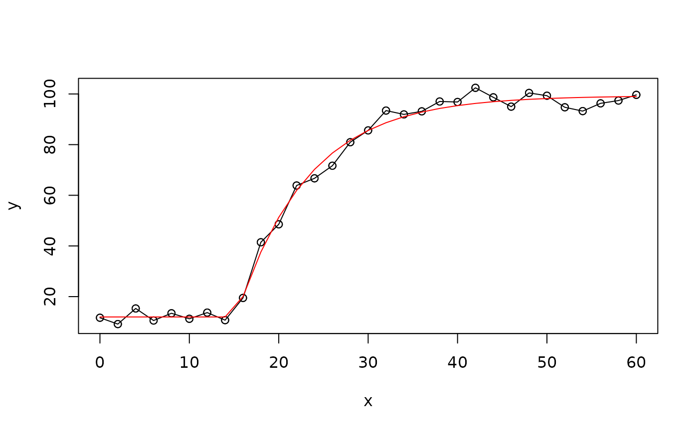

Calculate a four-parameter monoexponential curve.
Arguments
- x
A numeric vector for the predictor variable at which to calculate the response variable.
- A
A numeric parameter for the starting baseline value.
- B
A numeric parameter for the ending asymptote value.
- TD
A numeric parameter for the time delay in the units of
xbefore inflection.- tau
A numeric parameter for the time constant of the exponential inflection in the units of
x. The time constanttau (𝜏)is equal to1/k, wherekis the rate constant of the same monoexponential curve.
Examples
set.seed(13)
x <- seq(0, 60, by = 2)
A <- 10
B <- 100
TD <- 15
tau <- 8
y <- monoexponential(x, A, B, TD, tau) + rnorm(length(x), 0, 3)
data <- data.frame(x, y)
model <- nls(y ~ SSmonoexp(x, A, B, TD, tau), data = data)
model
#> Nonlinear regression model
#> model: y ~ SSmonoexp(x, A, B, TD, tau)
#> data: data
#> A B TD tau
#> 11.973 99.313 15.229 7.976
#> residual sum-of-squares: 232.9
#>
#> Number of iterations to convergence: 5
#> Achieved convergence tolerance: 5.452e-06
fitted <- fitted(model)
plot(x, y)
lines(x, y)
points(x, y)
lines(x, fitted, col = "red")
